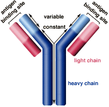
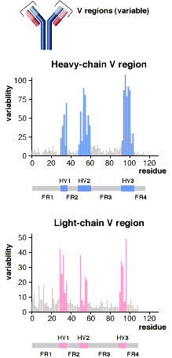
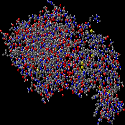
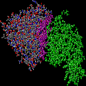
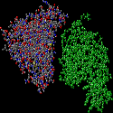
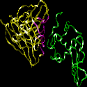
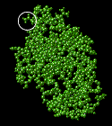
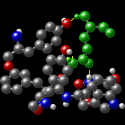
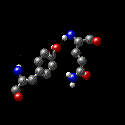
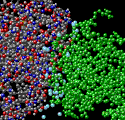

Antibody Structure
Introduction
|  |
Antibodies are immune system-related proteins called immunoglobulins. Each
antibody consists of four polypeptides– two heavy chains and two light chains
joined to form a "Y" shaped molecule.
The amino acid sequence in the tips of the "Y" varies greatly among different
antibodies. This variable region, composed of 110-130 amino acids, give the antibody
its specificity for binding antigen. The variable region includes the ends of
the light and heavy chains. Treating the antibody with a protease can cleave this
region, producing Fab or fragment antigen binding that include the variable ends
of an antibody. Material used for the studies shown below originated from Fab.
The constant region determines the mechanism used to destroy antigen. Antibodies
are divided into five major classes, IgM, IgG, Iga, IgD, and IgE, based on their
constant region structure and immune function.
|
|
The variable region is further subdivided into hypervariable (HV) and framework
(FR) regions. Hypervariable regions have a high ratio of different amino acids
in a given position, relative to the most common amino acid in that position.
Within light and heavy chains, three hypervariable regions exist – HV 1,
2 and 3. Four FR regions which have more stable amino acids sequences separate
the HV regions.
The HV regions directly contact a portion of the antigen's surface. For this
reason, HV regions are also sometimes referred to as complementarity determining
regions, or CDRs. The FR regions form a beta-sheet structure which serves as a
scaffold to hold the HV regions in position to contact antigen.
|
 |
Antibody/Antigen Interaction
Click on images to see enlarged view
|  |
 |
 |
 |
|
This image represents the structure of an antibody's variable region (Fab)
complexed with an antigen, in this case hen egg white lysozyme. The other images
in this section are derived from this structure.
|
The HV regions of a Fab, representing both light and heavy chains, are highlighted
in purple. The antigen is green. The part of the antigen in direct contact with
the antibody is called the antigenic determinant, or epitope.
|
In this view, the HV regions of the Fab have been deleted. The FR regions of
the antibody do not contact the antigen.
|
This ribbon structure shows the antibody's HV (purple) and FR (yellow) regions
of the Fab, and their interaction with an epitope of the antigen.
Animation: FR and HV regions of antibody
Animation: Antigen interacts with HV region

|
|
Antibody/Antigen Interaction –
A Closer Look
|  |
An antigenic determinant, a site on the antigen that the immune system responds
to by making antibody, can frequently be one unique structure on the antigen.
In hen egg white lysozyme, a glutamine at position 121 (Gln 121) protrudes away
from the antigen surface. In this view, Gln 121 is circled. The antibody is not
shown. The following images show how this feature is important for the formation
of a high affinity antibody-antigen interactions.
|
|

|
The antibody's HV region forms an opening to surround the antigen's protruding
Gln 121 (green). Hydrogen bonds (yellow) stabilize the antibody-antigen interaction.
In addition to hydrogen bonds, other weak interactions such as van der Waals forces,
hydrophobic interactions and electrostatic forces improve the binding specificity
between antibody and antigen. These interactions occur over large and sometimes
discontinuous regions of the molecules, improving binding affinity. The animation
shows amino acids of the antibody that interact with Gln 121.
Animation: Gln 121 of lysozyme surrounded by amino
acid residues of antibody
|
|  |
Close-up of a hydrogen bond – The Tyr 101 of the antibody forms a hydrogen
bond with the Gln 121 of the antigen. |
|  |
Water molecules (light blue) fill in spaces between the antigen and the antibody.
The water molecules contribute significantly to the binding energy by creating
additional hydrogen bonds. |
Molecular structures represented in this tutorial were obtained by X-ray crystallography.
The coordinates for these structures are registered at the Protein Data Bank (1FYA
and 1FYB).
External link
|